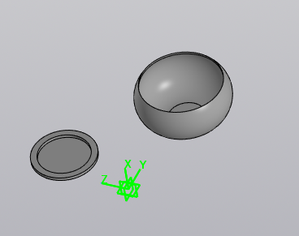
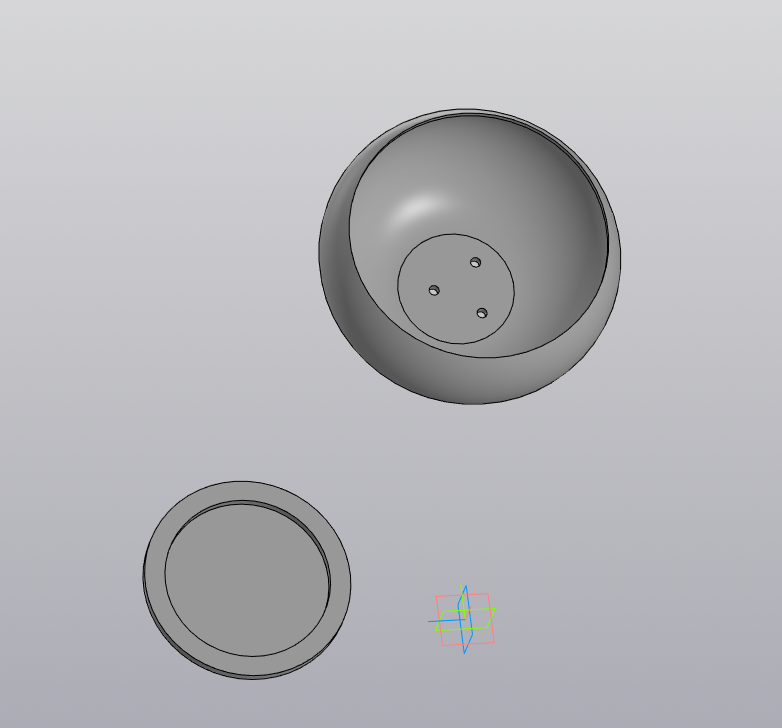

| Виды горшков | Приимущества | Недостатки |
| Пластмассовые | Один из самых распространённых вариантов. Мало весят, не боятся влаги, доступны в разных формах и цветах. | Нет |
Стеклянные | Идеальное решение для семейства Орхидных | Хрупкие и травмоопасные. |
Металлические | Прочные, долговечные. | Дорогостоящие и подходят не для всех комнатных растений. |
Деревянные | Способны дополнить комнатный интерьер в экологичном стиле. | Гниют |
Керамические | Подходят для габаритных растений, обеспечивают эффективную терморегуляцию. | Неустойчивы к падениям |
Глиняные | Хорошо пропускают воздух и влагу, что способствует активному и здоровому росту. | Хрупкие |
ХАРАКТЕРИСТИКИ
- Цвет товара..................................................................................коричневый
- Тип.........................................................................................................кашпо
- Материал............................................................................................пластик
- Размещение....................................напольное, настольное/на подоконник
- Назначение.............................................для балкона, для дома, для улицы
Какие же бывают горшки?
Вид моего изделия

